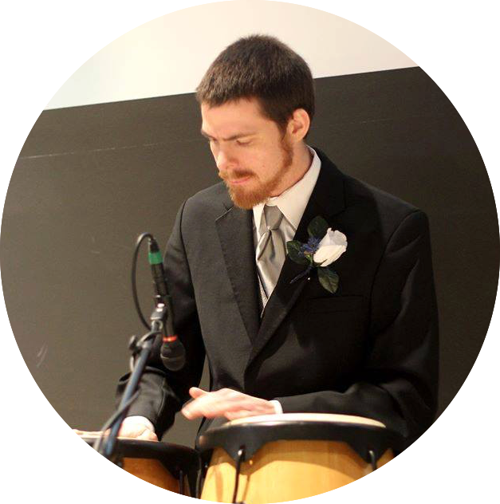

Jerimiah Woods
Aspiring Software Developer
Aspiring Software Developer
woods.jerry@gmail.com
715.572.4512
715.572.4512
EDUCATION:
Chippewa Valley Technical College Anticipated Graduation: December 2015
• Associate of Applied Science – Information Technology – Software Developer
• 65/68 credits completed
University of Wisconsin - Eau Claire Graduation Date: May 2013
• Bachelors of Science - Actuarial Science
TECHNOLOGIES:
• Software Development: Java, Groovy, Visual Basic, Android, Objective-C
• Web Development: HTML, CSS, JavaScript, Java, PHP, Ruby on Rails
• Developer Tools: Git, Bitbucket, PivotalTracker, Xcode, Eclipse, IntelliJ, NetBeans
• Operating Systems: Mac OSX, Windows, Linux
• Databases and Reporting: SQL, Access, Crystal Reports
EMPLOYMENT HISTORY:
Mobile Application Developer Mondovi, WI
GalacticTech (August 2013 – October 2013)
• Learned Objective-C through a combination of self-study and professional guidance
• Assisted in development of marketing application using Xcode
Shift Leader Eau Claire
Kwik Trip, Inc. (June 2011 – Present)
• Effectively lead team on Madison Street, one of the highest volume convenience stores in the Chippewa Valley, to ensure all duties are accomplished in an excellent and timely manner
• Demonstrate reliability by maintaining perfect attendance
• Maintain efficient business operations by valuing appropriately detailed internal communication
• Provide a unique experience by demonstrating exceptional and genuine guest service
Pallet Approver Eau Claire, WI
Menard, Inc. (April 2010 – May 2011)
• Supervised pallet builders and inspected pallets for quality before labeling them for shipment
• Prioritized teamwork by maintaining continual communication with others via handheld radios
Table Games Dealer/Dual Games Supervisor Nekoosa, WI
Ho-Chunk Gaming - Nekoosa (July 2007 – Sept 2009)
• Personally created and conducted 30-player, semi-weekly poker tournaments
• Managed and observed four dealers simultaneously to ensure speed, accuracy, and game security
• Developed and maintained leading productivity as a blackjack dealer, measured in hands per hour
• Delivered excellent and entertaining customer service, building rapport with clientele